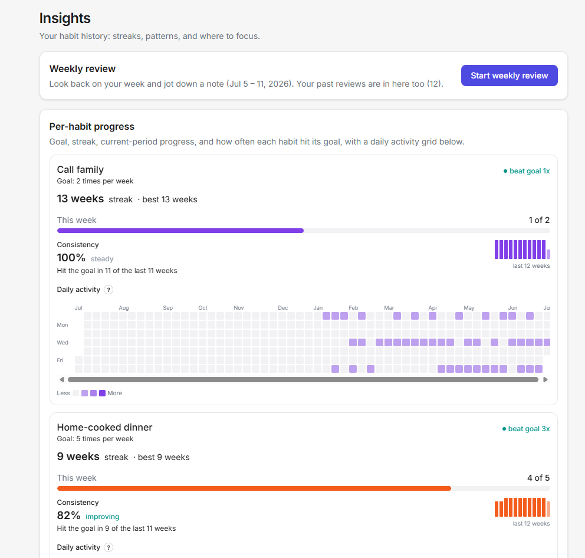
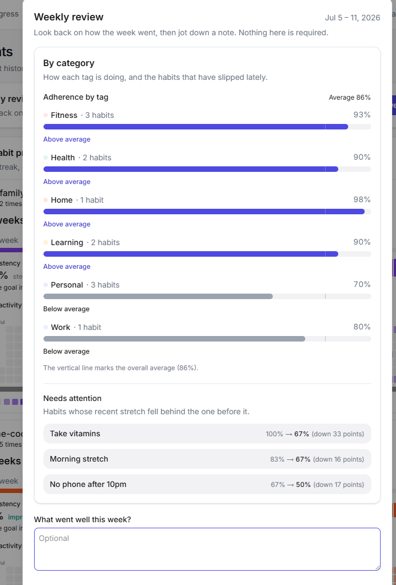

Productivity App: v2 Roadmap Plan
What this is: the working plan and priority decisions for v2, sitting on top of the fuller v2 scope-options menu: what to do, in what order, and how.
What it shows: roadmap sequencing and prioritization on top of a candidate menu, plus structuring a backlog for parallel execution.
Source: lightly edited from the project's v2 plan for presentation (internal references cleaned). The full working version lives in the app repo.
v1 (all three phases) has shipped, and v2 is now in active development against this plan. The companion scope-options document is the full candidate menu; this doc is the ordering and the decisions the build is following.
What v2 is
v1 shipped and its audit is closed. v2 deepens the app rather than broadening it: better quantitative tracking (Insights), reminders, and richer habit goals come first, and platform reach (mobile) comes last. The first wave is in active development now: the de-risk spikes are complete and the Insights build is underway.


Priority decisions (locked)
These reflect product-owner calls made while planning v2:
- Notifications and reminders is the top priority. It is the biggest behavior-change lever for a task and habit app, elevated above the tracking work. The caveat: it cannot start cold. It is the only item that breaks the current "no server jobs, local-first, guest-usable" model, so it starts with an architecture spike before any build.
- Pattern analytics is design-first. High value and cheap to build (it reads existing completion data, with no new data model), but the scope has to be decided from a competitive scan plus a mockup, not invented. It addresses the gap that the current Progress surface is only a current-period snapshot with no history, trends, or streaks.
- Duration habit goals comes after or alongside analytics. It extends the same Progress area, so it is sequenced against analytics to avoid two streams reshaping one surface at once. It carries a real new interaction (entering a duration when logging, versus today's one-tap), so it is the most design-involved of the tracking items.
- Mobile is last, after the app is built out with the other v2 features. The narrow-screen responsive Week and Month layout is the first step of mobile and moves down with it.
- Data export is demoted. Its concrete value is guest backup and data portability, cheap but low-urgency. Optional, not a priority.
- Social and collaborative is parked. It contradicts the single-user, last-write-wins architecture; it would be a different product.
- Onboarding needs a product decision first. It is in tension with the "zero setup" principle, so the question of whether to have it at all precedes any design.
Ordering
- Notifications and reminders (spike first, then a phased build). Top priority.
- Pattern analytics (design-first: competitive scan, then mockup, then lock scope, then build).
- Duration habit goals (after or with analytics; shared Progress surface).
- Setup-gated: Google Drive attachments in notes and additional calendar integrations (Apple, Outlook), each needing external OAuth or API setup before build.
- Big spikes: AI-assisted scheduling, and gamification (built after analytics so it reuses the streak logic).
- Mobile: responsive Week and Month grids, then any native work. Last.
Parked: social and collaborative. Decision-needed before scheduling: onboarding and data export.
Dependencies: analytics precedes gamification (shared streaks); analytics and duration goals share the Progress surface; notifications is standalone new architecture; responsive grids precede mobile.
De-risk tracks (both complete)
Neither top item could be built cold, so v2 opened with de-risk work. Both are now done and ticketed.
- Notifications spike (done). Architecture: Web Push with VAPID, a server-only push-subscriptions table, and a service-worker push handler, scheduled by a database cron job calling the app's own route (the free path, no paid tier) and reading due items server-side. Notifications are account-only, since a guest has nothing server-side to remind against; iOS needs an installed PWA; reminders fire minutes before, so roughly five-minute cron granularity is fine. Phase A is green-lit and ticketed, with Phase B (per-item reminders and settings) and Phase C (habit nudges) as follow-on epics.
- Analytics design (done). A competitive scan of the analytics surfaces of eight habit and task apps plus a mockup; scope locked and ticketed.
Analytics over-logging rule (baked into the Insights build). Count habits can be logged past their goal (for example 4 of 3). Analytics keeps two separate measures and never conflates them: goal adherence (per period, binary: met when the count reaches the target, which drives frequency-relative streaks and a consistency percentage capped at 100% per period) and volume (raw event count, uncapped, shown as heatmap intensity). Streaks count consecutive met periods; over-logging neither extends nor breaks a streak.
Locked Insights scope (first build). In: the foundation library and surface, a per-habit card with heatmap, day-of-week and trend-over-time views, a category rollup with a needs-attention list, and a weekly review, with frequency-relative streaks. Deferred: skip/pause (a new stored state) and planned-versus-actual (which depends on duration habit goals). Dropped: the per-completion "why or why not" note.
What's building now. Both foundations are independent, so the Insights foundation and the notifications Phase-A wave run in parallel. Analytics is the faster win; notifications is the higher-priority build. Duration habit goals follows, coordinating with the analytics work on the Progress surface.
How we work
- The same per-ticket loop as v1: scoped tickets with acceptance criteria and the Definition of Done, verified in the live preview and tests, committed per ticket. Auto-deploy is on, so each merge to main goes live.
- The notifications infrastructure rides a short-lived branch (the riskiest, being new server and service-worker territory) and merges when green.
- Tickets live in Jira, where the v2 backlog is managed and keeps expanding as the build proceeds.
- Independent items can be built in parallel where they do not touch the same files; the ordering above notes the collisions to avoid.
How the backlog is structured
The v2 work is organized into two epics that map to the two workstreams above, Insights (analytics) and Notifications, decomposed so they can run in parallel. Each epic follows the same shape: a foundation story lands first (the shared surface and wider history read for Insights; the subscription table and service-worker handler for Notifications), then a set of independent stories runs as a parallel wave (the per-habit card, the trend and slip views, the category rollup), then an integration story closes the epic (the weekly review for Insights; the test-send that closes Notifications Phase A). Every story carries acceptance criteria and the same Definition of Done as v1.
The live backlog is maintained in Jira and keeps expanding as v2 is built. This document captures that structure and the sequencing decisions, not a snapshot of individual tickets, which move week to week.